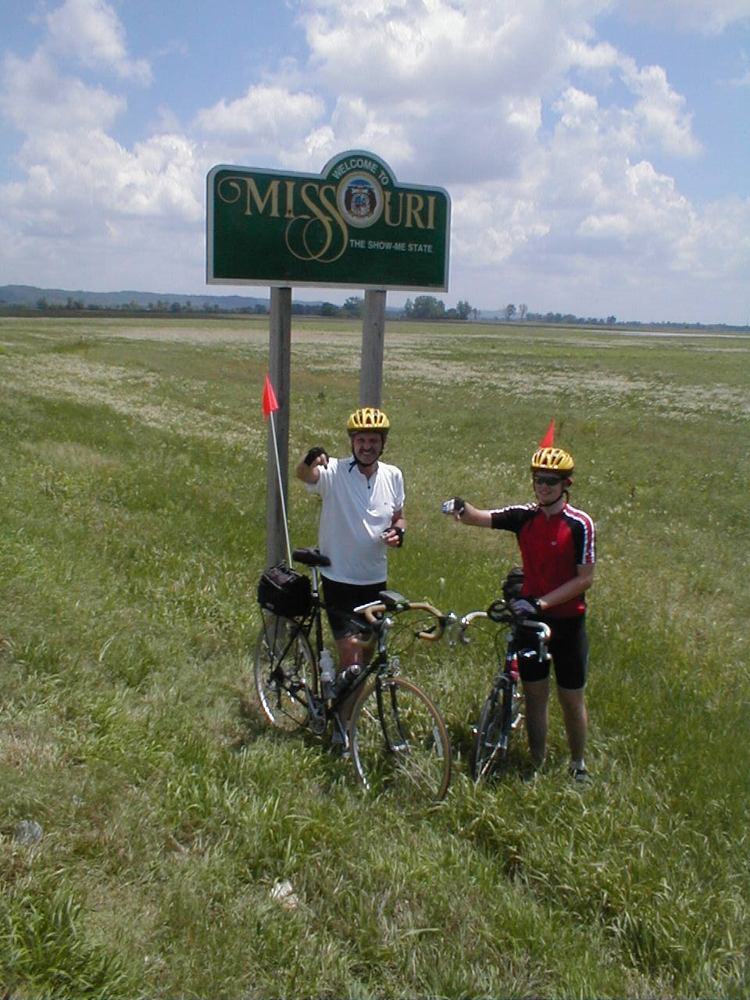

Day 26: June 7, Topeka, KS to Saint Joseph, MOPrevious Day - Home - Next Day Photo of the DayMe and dad at the Missouri state line. Keegan's LogDay 26: June 7, Topeka, KS to Saint Joseph, MO Mileage: 85.0 milesWeather: Warm, Sometimes cloudy, Headwinds Vertical Climb: 2100 feet Riding Time: 6:15 We rode through downtown Topeka after we left the hotel this morning, the city was a lot bigger than I expected. We began the day under sunny skies, warm enough that I was comfortable in short sleeves and shorts, but with about a 5 mph headwind. We left Topeka and rode the long rolling hills along Highway 4 for much of the morning, though it seemed like we were doing a lot more climbing than descending. Trees have finally become a lot more commonplace, the road now looks much like home except for the long hills. The first sag was at one of the few gas stations along the road, I stopped to oil my derailleur which had been squealing all morning. The winds picked up in the late morning, we had a brief period of threatening clouds, then back to mostly blue sky for the afternoon and evening. We continued riding to the Missouri state line, and after the usual sprinkle, continued on to the sag only a few miles away. We followed a river basin for a while, which meant about 20 miles on level ground. The road in to St. Joseph was lovely, the parkway wound up and down the hills almost like a switchback road. We got in to the hotel a little late, around 4:15, but today we had plenty of time to shower before route rap. Dinner was at Applebee's, we were going to start a food fight but we didn't get the food for over an hour, so we were to hungry to waste any. Tomorrow is another long day, 86 miles with climbing to Chillicothe. We're into the Missouri rolling hills, so the riding is going to be up and down for the next few days. Now if only those winds would turn around... Phil's LogKeegan and I are both working on things to say about today. It was a nice day, the terrain was entirely rolling with only one flat stretch as we followed the Missouri River valley. The Missouri River must have been in that valley for a long, long time. I have noticed both from the air and from the surface that it has worn a perhaps 10 mile wide swath between the valley walls, and it floods to any degree only rarely. The Missouri River also represented our crossing from Kansas into Missouri. The Amelia Earhart Bridge at Atchinson carried us across, it's an interesting, narrow old steel truss bridge, high and with a significant span. The last few miles of our 85 mile ride were down the Southwest Parkway through Saint Joseph's. It is a long city park, and I rode the bike path just for giggles. We ride through Maysville tomorrow, it promises to be interesting. It also promises to be a very hilly day. Dinner was at Applebee's. Very slow service, we amused ourselves with paper airplanes made from menu pieces, and spitballs. We had fun, but a few waitresses were hit by stray shots. Fortunately, non-bicycle patrons were spared. The group is a fun bunch, but can get rowdy.... |
{kind=link}